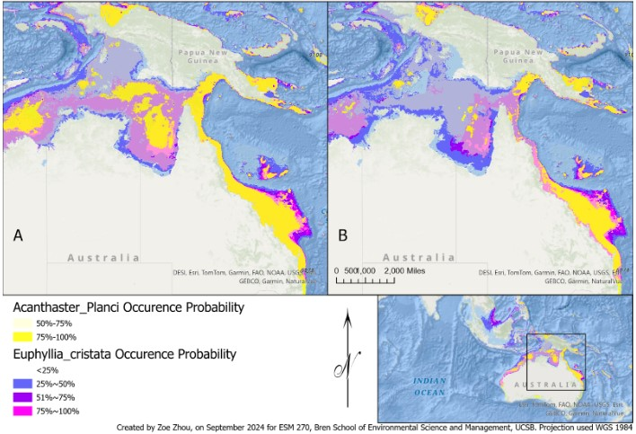
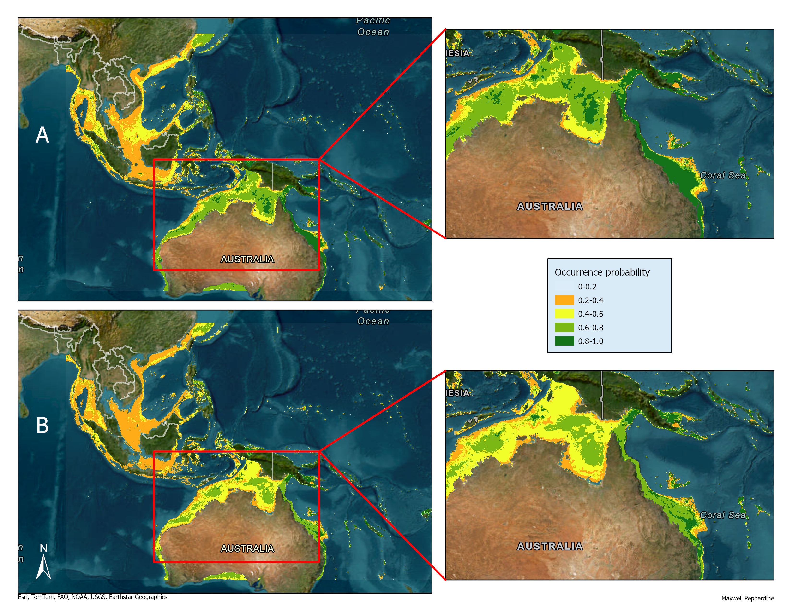

Overview
This analysis, completed by Zoe Zhou and I, is from an assignment in ESM 270 (Conservation Planning) at the Bren School of Environmental Science & Management at the University of California, Santa Barbara. The assignment focused on modeling the current and future distributions of the crown-of-thorns starfish (Acanthaster planci) and grape coral (Euphyllia cristata) in the eastern Indo-Pacific region using Maxent. It was required to be limited to two pages, with a figure included, hence the brevity of the write-up. The analysis aimed to visualize changes in the occurrence probability and geographical distribution of these species under current and future climate scenarios to delineate regions where active restoration plans could be implemented.
Background
Ecological restoration is the process of enhancing the recovery of natural ecosystems that have been degraded, damaged, or destroyed (SER, 2004). Among other reasons, restoration efforts are commonly employed to mitigate and repair damage caused by introduced or invasive species. One example of an invasive species is the crown-of-thorn starfish (Acanthaster planci) which is known to eat and decimate coral populations such as the grape coral (Euphyllia cristata) (Brodie et al., 2005). Before initiating restoration efforts, it’s important to conduct data-driven analyses to advance restoration planning and employ the most effective management actions.
Approach
A maximum entropy (Maxent) model was used to predict changes in the occurrence distribution for the crown-of-thorns starfish (Acanthaster planci) and grape coral (Euphyllia cristata) based on key marine data layers. Our analysis aimed to accomplish two primary goals: (1) Visualize changes in the current and future occurrence probability and geographical distribution of the crown-of-thorns starfish (COTS) and grape coral in the eastern Indo-Pacific region; (2) Utilize information from the species distribution models to propose an active restoration plan in areas where the COTS and grape coral are likely to occur. Maxent was applied using the R package Wallace (v2.1.1), an R-based GUI application that offers a simple, reproducible approach for ecological modeling and niche/distribution modeling analyses (Kass et al., 2022).
Occurrence data for each species was acquired from the Global Biodiversity Information Facility (GBIF). Marine environmental data were sourced from Bio-ORACLE, which provides essential oceanographic layers such as ocean temperature (mean, max, min), salinity, nitrate and phosphate concentrations, and pH, all at a resolution of 0.05 degrees (Tyberghein et al., 2012; Assis et al., 2024). These variables were chosen based on their relevance to marine species distribution (Brodie et al., 2005; Yasuda, 2018; Wang & Tabeta, 2023). To model future distribution, we used data from a moderate emission scenario (SSP3-7.0) for the decade 2020-2030. All marine environmental data were downloaded in NetCDF format and converted to GeoTIFFs using the terra package in R to ensure compatibility with Maxent.
For model evaluation, we used spatial partitioning with a 75:25 (training:testing) split. The Maxent model leveraged presence and background points to account for potential biases that may arise from using presence-only points (Merow, 2013). A linear-quadratic (LQ) feature class was used to balance model complexity and account for non-linear species-environment relationships. After developing the distribution models, we analyzed the results in ArcGIS Pro v3.0 to identify key areas for restoration.
Results
Under current conditions, the Maxent models indicated a high probability of occurrence for both the crown-of-thorns starfish (CoTS) and grape coral along the coastal areas of Northern Australia. Grape coral also showed a concentrated distribution around the Natuna Islands in the South China Sea, where CoTS is not projected to occur (Figure 1 Bottom). Future projections suggest a shift in both species’ distributions to the northeastern coast of Australia, with a contraction across the broader Indo-Pacific (Figure 1B). Notably, the contraction appears more pronounced for CoTS than grape coral. Despite these changes, the northeastern coast remains a favorable habitat for both species, making it a critical focus for future conservation and management strategies. The model’s performance was strong, with an AUC of 0.9187 for the training data and 0.9024 for the validation data.


Conclusion
For restoration efforts, the predicted overlap between CoTS and grape coral distributions offers essential insights. Despite CoTS being native to the Great Barrier Reef, their periodic population outbreaks—exacerbated by human activities—continue to pose a significant threat to coral ecosystems. Active management strategies, such as the ongoing Crown-of-Thorns Starfish Control Program on the Great Barrier Reef, play a pivotal role in mitigating CoTS outbreaks. However, the study has several caveats, such as the reliance on presence-only data and environmental layers that may not capture local habitat variability, as well as uncertainty in future projections based on a single emission scenario. Moreover, the model does not account for species interactions or local adaptations, which could affect the predicted distributions of both species.
Acknowledgements
This assignment was created and organized Ashley Larsen, an Associate Professor at the Bren School and the instructor for ESM 270. ESM 270 (Conservation Planning) is offered in the Master of Environmental Science & Management (MESM) program at the Bren School.
Citation
@online{pepperdine & zoe zhou2024,
author = {Pepperdine \& Zoe Zhou, Maxwell},
title = {Mapping the Distribution of Native and Invasive Marine
Species in the {Indo-Pacific} Region},
date = {2024-09-22},
url = {https://maxpepperdine.github.io/posts/2024-09-22-maxent-coral/},
langid = {en}
}